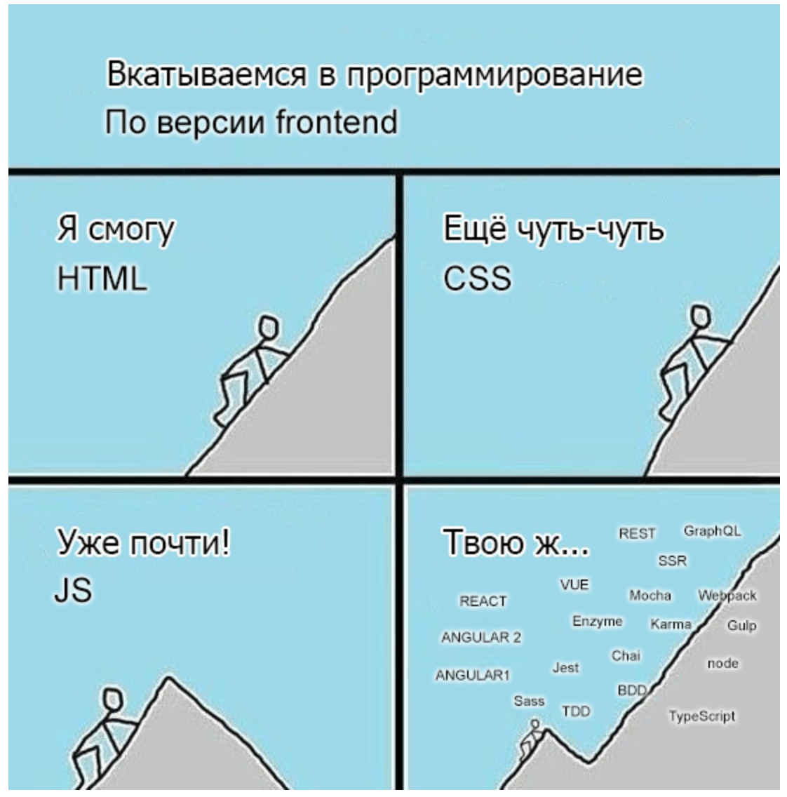

История профессии фронтенд-разработчика
Начало
История этой молодой профессии началась в 1990 году. Именно тогда британский изобретатель Тим Бернерс-Ли разработал свой проект «Всемирная паутина». Тогда и был создан первый сайт. Конечно, поначалу труд веб-разработчика мало походил на его современную деятельность, ведь сайты «каменного века» состояли только из текста, а о красивом внешнем виде и продуманном функционале интернет-пользователи могли лишь мечтать. Веб-разработчики тех времен не работали с формой и фоном, мало экспериментировали с цветом.
Революция
Все изменилось, когда появился первый графический браузер Mosaic, который положил начало новой эпохе в работе этих специалистов. С течением времени работа веб-разработчика становилась труднее, и это не удивительно: по мере развития интернета запросы аудитории менялись и усложнялись. Современному веб-разработчику нужно уметь реализовать любую безумную идею дизайнера и самую сложную схему функционала заказчика.